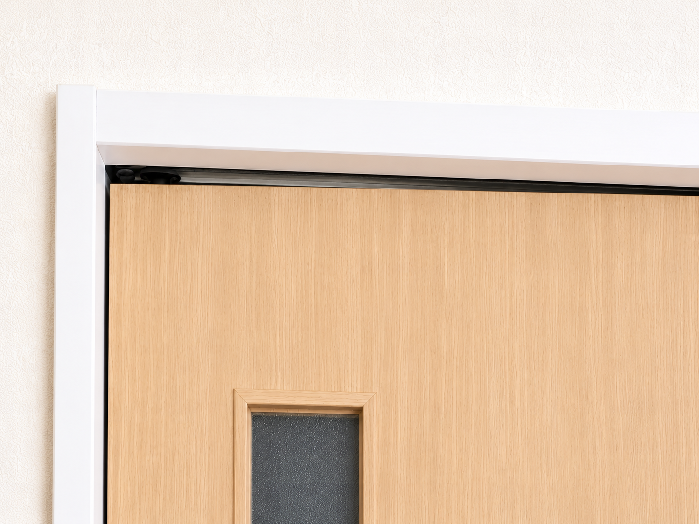

ヒアルロン酸でも改善せず、
人工関節を勧められた方へ
トイレの立ち座り。
歩く。
階段をのぼる。
痛みを気にせず、スッとできる毎日を目指しませんか？
人工関節しかないと思っていた方にも、まだ別の可能性が残っているかもしれません。当院では、生活で困っていることから考え、レントゲンでは分からない問題まで確認し、あなたに合った施術を組み立てています。
まずはLINEでお気軽にご相談ください。
相談だけでも大丈夫です。
「こんなお悩みありませんか？」
- 朝、ベッドから起きるたびに痛い。
- トイレから立ち上がるたびに痛い。
- スーパーへ行くのも、おっくうになってきた。
階段を見るだけで、「また痛くなるかもしれない。」そんな不安が頭をよぎる。
ヒアルロン酸注射も受けた。リハビリも続けた。それでも痛みを繰り返す。
「なぜ治らないのだろう。」
そう感じているなら、一つ、考えてみてほしいことがあります。
もし、その原因が膝以外にあるとしたら──。そして、その原因がレントゲンには写らず、見落とされているものだとしたら──。
もし「なぜ治療を続けても痛みを繰り返すのだろう」と感じているなら、この先の内容があなたのお役に立てるかもしれません。
特に、こんな方には読んでほしい内容です。
- 安静にしている時は痛くないのに、動く時だけ痛い
- 日によって、痛い場所が変わる
- 痛みの強弱が変化する
もし、あなたにもこのような痛みの変化があるのなら、膝だけを見ていては分からない問題が残っているかもしれません。
なぜ、ヒアルロン酸注射やリハビリを続けても改善しない方がいるのでしょうか？
もちろん、ヒアルロン酸注射やリハビリによって、痛みがやわらぐ方もいらっしゃいます。私も病院勤務時代、そのような患者さんをたくさん担当してきました。しかし一方で、何度治療を受けても、しばらくするとまた痛くなる。そんな状態を繰り返している方も数多くいらっしゃいました。
では、
なぜ同じように治療を受けても、痛みを繰り返してしまう方がいるのでしょうか？
私は病院で患者さんと向き合う中で、このことに疑問を持つようになりました。そして、患者さんの身体をみていく中で、痛い場所だけをみていては分からないことがあると気づきました。
では、私は何を見ているのでしょうか？私が非常に大切にしているのが、「痛みが、いつ、どんな時に出るのか」ということです。
例えば、寝ている時には痛くない。でも、立ち上がると痛い。じっとしていれば大丈夫。でも、歩くと痛い。姿勢を変えると、痛みの強さが変わる。動きによって、痛む場所まで変わる。
私はこうした痛みをみた時、「本当に膝だけが原因なのだろうか？」と考えます。なぜなら、こうした痛みの変化は、関節機能の問題を考えるうえで非常に重要な手がかりだからです。
だから私は「どこが痛いですか？」だけではなく、「どんな時に痛いのか」「どうすると痛みが変わるのか」まで確認します。そして当院では最初に、「今、一番困っていることは何ですか？」とお聞きします。
- トイレから立ち上がるのがつらい。
- スーパーへ行けない。
- 夜、痛みで眠れない。
- 階段が怖くなった。
同じ「膝が痛い」という方でも、困っていることは一人ひとり違います。だから私は、まず「何ができなくて困っているのか」を確認します。
膝が痛くても、膝だけを見ません。その動作を妨げている問題がどこにあるのか、背骨・骨盤・股関節・足首まで確認していきます。すると、レントゲンでは分からなかった問題が見つかることがあります。私は病院勤務時代から現在まで、そのような方を数多くみてきました。
もし、痛みをやわらげる治療を続けても、痛みを引き起こしている問題が残っているとしたら、また痛みを繰り返すことがあります。
では、その問題は、どこに隠れているのでしょうか？
痛い場所が膝だからといって、問題まで膝にあるとは限りません。そこで当院が必ず確認する場所があります。それが、「背骨」です。
「膝が痛いのに、背骨？」
そう思われたかもしれません。でも、当院では膝の痛みを確認するとき、背骨を必ず確認します。なぜでしょうか？それは、膝だけで身体を動かしているわけではないからです。
- 立ち上がる。
- 歩く。
- 階段を上り下りする。
こうした動作では、背骨・骨盤・股関節・膝・足首、それぞれの関節が連動して動いています。一つのチームのようなものです。
もし、その中の一つが本来のように動けなくなったら、身体はその動きを別の場所で補おうとします。その結果として、痛い膝とは別の場所に問題があり、膝に症状が現れていることもあります。
つまり、痛い場所が膝だからといって、問題まで膝にあるとは限らないのです。
では、背骨の何を確認しているのでしょうか？姿勢でしょうか。筋肉の硬さでしょうか。
実は、私が確認しているのは、関節の中で起きている「小さな動き」です。
関節の「小さな動き」とは何でしょうか？
私が病院で8年間、多くの方の身体をみてきた中で、痛みに影響していると考えられる問題の一つがありました。それが、「関節機能障害」と呼ばれる状態です。
関節機能障害とは、簡単にいうと、関節の中で起きる小さな動きのズレです。
引き戸を想像してみてください。

見た目には壊れていない。レールもある。それでも、ほんの少しレールからズレるだけで、引き戸は重くなったり、引っかかったりして、スムーズに動かなくなります。
関節にも、これと似たことが起こります。見た目には大きな異常がなくても、関節の中の小さな動きがうまくいかなくなる。すると、身体はその動きを補いながら動くようになります。そして、こうした小さな動きの問題は、背骨にある小さな関節に起こりやすいのです。そのため、膝そのものだけではなく、背骨の関節の状態まで確認する必要があるのです。
「それなら、病院の検査で分かるのでは？」
そう思われたかもしれません。ところが、ここにもう一つ重要なポイントがあります。
なぜ、今まで見つからなかったのでしょうか？
関節機能障害による小さな動きの問題は、通常、レントゲンには写りません。なぜなら、レントゲンで確認できるのは主に静止した状態だからです。一方、関節機能障害で問題になるのは、関節の「動き」です。しかも、ただ歩いたり、膝を曲げ伸ばししたりするだけでは、分からないことがあります。だから、レントゲンでは分からない問題が、まだ残っていることがあります。
では、レントゲンにも写らず、普通に身体を動かしただけでも分からない問題を、どうやって確認するのでしょうか？答えは、関節の「小さな動き」にあります。
関節機能障害の有無は、画像を見るだけでは判断できません。実際に身体に触れながら、関節の中で起きている小さな動きを一つひとつ確認していく必要があります。私は、この関節機能障害を評価・施術するための専門的な訓練を受けてきました。そのため当院では、痛みのある膝だけではなく、背骨・骨盤・股関節・足関節、それぞれの関節の小さな動きまで確認していきます。
そして、ここで最初にお聞きした質問が重要になります。「今、一番困っていることは何ですか？」
例えば、トイレから立ち上がる時に痛いのであれば、その立ち上がりを確認する。歩く時に痛いのであれば、歩く動作を確認する。そして身体を評価し、必要な施術を行ったあと、もう一度同じ動作を確認します。
つまり当院では、「関節が動くようになったか」だけでは終わりません。トイレから立ち上がれるのか。歩きやすくなったのか。階段を上り下りしやすくなったのか。「困っていた生活がどう変わったのか」まで確認します。
もちろん、痛みが強い状態で無理にこうした動作を行っていただくことはありません。まず状態を確認し、必要な施術を行ったうえで、無理のない範囲で確認していきます。これが、当院が生活で困っていることから施術を組み立てるという意味です。
では、問題が見つかったら、実際にはどのような施術をするのでしょうか？痛い膝を、最初から施術するわけではありません。背骨・骨盤・股関節・足首など、膝とは離れた関節まで確認し、問題が見つかった関節の小さな動きを、身体への負担が少ない方法で整えていきます。ボキボキ鳴らしたり、強い力で押したり、無理に関節を動かしたりすることはありません。施術後には、先ほど確認した生活動作をもう一度行い、変化を一緒に確認します。
「本当に、膝をほとんど触らなくても
変わることがあるの？」
実際に私が担当した患者さんのお話をご紹介します。
※以下は、私が病院勤務時代に実際に担当した患者さんの事例です。個人情報保護のため、写真や動画は掲載していません。
「えっ、なんで？ 膝、触ってないよね？」
歩くことが怖かった70代女性・BさんBさんは、歩くたびに強い膝の痛みがあり、病棟ではサークル歩行器を使って移動されていました。リハビリを受けていましたが、痛みは残っていました。
私が担当した時、確認したのは痛い膝だけではありませんでした。背骨などの関節の状態を確認し、身体の反応をみながら膝とは離れた関節へ施術を行いました。すると、痛みが変化しました。
施術後、Bさんに状態を聞くと、驚いた表情で、
「えっ、なんで痛くない！ なんで？ 膝触ってないよね？」
と話されました。さらに立ち上がっていただくと、それまで上肢に頼っていた立ち上がりにも変化がみられ、よりスムーズに立てるようになりました。
「今では杖で歩けるし、手を離しても数歩なら痛みなく歩けるんです。」
歩くことへの不安も少しずつ減り、笑顔で喜ばれていた姿が今でも印象に残っています。
「久しぶりに痛くない朝を迎えました。」
夜も眠れなかった90代女性・Aさん施術前は、夜になると膝がズキズキ痛み、寝返りを打つたびに目が覚めてしまう毎日でした。
「寝ているときも膝がズキズキして、毎晩ほとんど眠れませんでした。」
眠れない日が続いたことで、昼夜が逆転し、目の下には大きなクマができ、表情にも元気がありませんでした。私は、痛い膝だけではなく、背骨や骨盤などの関節まで確認し、問題が見つかった関節へ施術を行いました。
「久しぶりに痛くない朝を迎えて、嬉しくて涙が出ました。」
その後、朝まで眠れる日が増え、昼夜逆転も改善し、目の下のクマも目立たなくなり、表情も少しずつ明るくなっていきました。私にとって印象的だったのは、単に「膝の痛みが減った」ということではありません。眠れる生活が戻ってきたことです。
「いつ痛みが来るか分からない。」
痛みだけではなく、笑顔まで戻った80代女性・DさんDさんは、立ち上がる時、歩こうとした時、身体の向きを変えた時に突然、膝へ強い痛みが走る状態でした。
「いつ痛みが来るか分からない。」
そんな不安から、表情も暗く、気持ちも沈んでおられました。主治医からロキソニンを処方されていましたが、痛みは思うように改善しませんでした。そこで、膝とは離れた関節まで確認し、問題が見つかった関節へ施術を行いました。施術を始めて3回目頃には、痛みがほとんど気にならなくなりました。その後、ロキソニンの処方も終了となり、退院の日には笑顔で感謝の言葉をかけてくださいました。痛みだけではなく、表情まで明るくなられていたことを、今でもよく覚えています。
このような変化を感じられた方もいらっしゃいます。
80代女性・Cさん「膝が痛くて、立って洗面をするのも辛かったんです。」
「今は立った姿勢でも、支えがあれば不安なく過ごせます。」
他院で「偽痛風」と診断され、膝に触れられるだけでも激痛がありました。施術後には、
「まさか歩いても痛くなくなる日が来るなんて……。」
と話してくださいました。
もちろん、これらは個々の患者さんの経過であり、すべての方に同じ結果をお約束するものではありません。ただ、私が病院勤務時代から現在まで一貫して経験してきたことがあります。それは、膝だけを見ていた時には分からなかった問題が、膝とは離れた関節まで確認することで見つかるということです。
もしあなたも、これまで治療を続けても改善せず、「もう年齢だから仕方ない。」「人工関節しかないのかな。」そう思われているのであれば、まだ確認されていない問題が残っている可能性があります。
まずは一度、確認してみませんか？
ご相談だけでも大丈夫です。
私が目指しているのは、ただ膝の痛みをやわらげることではありません。あなたが、もう一度自分の足で歩き、行きたい場所へ行き、大切な人との時間を安心して過ごせること。そんな生活を取り戻すことです。
では、なぜ私は、ここまで「膝だけを見ない」ことを大切にするようになったのでしょうか。その理由には、病院勤務時代の経験があります。少しだけ、そのお話をさせてください。

井本大揮
作業療法士 FJTアドバンス修了私は病院で8年間、変形性膝関節症をはじめ、さまざまな痛みに悩む患者さんのリハビリに携わってきました。その中で、人工関節手術後の患者さんも数多く担当してきました。もちろん、手術によって生活が改善する方もたくさんいらっしゃいます。
一方で、
「手術をしたのに痛みが残っている。」
「もっと早く違う方法を知っていれば……。」
そんな声を聞くこともありました。その中でも、今でも忘れられない患者さんがいます。その患者さんは、人工関節手術を受けたあとも思うように歩くことができず、毎日のように痛みに悩まれていました。
私は、「なぜ手術を受けたのに、痛みが残るのだろう。」そう考えるようになりました。そして、学び続ける中で出会ったのが、関節機能障害という考え方でした。膝とは離れた関節まで確認し、レントゲンには写らない「小さな動き」まで見る。すると、今まで見えていなかった問題が見えてくることがありました。
そして実際に、関節の「小さな動き」を整えることで、立ち上がる、歩く、眠るといった生活まで変わっていく患者さんを数多く経験しました。その経験を通して、私は強く思うようになりました。
「人工関節しかありません」と言われる前に、この考え方を知っていただける場所をつくりたい。
その思いから、Functional Life Labを開業しました。もちろん、人工関節が必要な方もいらっしゃいます。私は、手術そのものを否定しているわけではありません。ただ、人工関節を決める前に、まだ確認できることがある。私は、その可能性を残したまま諦めてほしくありません。それが、私がFunctional Life Labで膝の痛みに向き合っている理由です。
だから私は、「どこが痛いですか？」だけでは終わりません。まず、「今、一番困っていることは何ですか？」そして、その先にある、「何をもう一度できるようになりたいですか？」までお聞きします。その答えをもとに、レントゲンでは分からない問題まで確認し、一人ひとりの施術を組み立てています。
「本当に任せて大丈夫なの？」
ここまで読んで、そう思われた方もいるかもしれません。そこで、私が関節の施術を学んだ先生からいただいた言葉をご紹介します。
推薦の声
「井本さんは、関節に特化した治療技術のスペシャリストです。私たちの提供する最高のコースを受講されました。他の技術では全く効果を実感されていない方には、最後の砦になる可能性があります。井本さんほど、患者さんに真摯に対応し、結果を出してくれる治療者は他にいません。あなたがどこに行っても思うような結果が得られていないのでしたら、井本さんはきっとあなたの望む結果を出してくれます。」
ここまで読んで、「私にも、まだ確認されていない問題があるのかな？」そう思われた方へ。まずは、一緒に状態を確認するところから始めます。
初回カウンセリング・施術体験
施術場所 大塚・浅草の2か所
大塚駅より徒歩1分／浅草駅より徒歩2分
※詳しい場所は、ご予約確定後にお伝えします。
受付時間 10:00〜20:00
不定休・完全予約制
LINEで「ご希望の場所（大塚／浅草）」と「ご希望日時を2〜3候補」お送りください。
初めての方へ｜ご来院から施術までの流れ
「実際に行ったら、何をするの？」初めての整体院なら、そう思われるのも当然です。当院の初回は、いきなり施術から始めるわけではありません。まず、あなたが何に困っているのか。そこから始めます。
いつから痛むのか、どんな時に困っているのかをお聞きします。痛みだけではなく、現在困っている生活動作について詳しく確認します。

膝だけではなく、背骨・骨盤・股関節・足首など、膝とは離れた関節まで確認します。特に背骨は必ず確認し、関節の「小さな動き」に問題がないかを一つひとつ確認していきます。

検査で問題が見つかった関節の小さな動きを、身体への負担が少ない方法で整えていきます。痛い膝をいきなり強く施術したり、ボキボキ鳴らしたりすることはありません。施術後には、困っていた生活動作がどう変わったのかを一緒に確認します。

最後に「なぜ膝へ負担が集まっていると考えられるのか」を、できるだけ分かりやすくご説明します。そのうえで、今後の施術方針や来院の目安をご提案します。ご自身の状態を理解し、納得したうえで今後を選んでいただけるよう、丁寧にお話しします。

「もう人工関節しかない。」そう決める前に、まだ確認されていない問題がないか、一度確認してみませんか？
とはいえ、「自分にも合うのかな。」「いきなり何度も通うのは不安。」そう思われる方もいらっしゃると思います。だから当院では、まず初回に今の状態を確認し、今後どのように改善を目指していくのかをご説明します。
今回、このページをご覧の方へ
初回限定のご案内です
初回カウンセリング＋身体の状態の確認＋施術
通常 15,000円（税込） ↓ 初回 2,980円（税込）8月25日まで／初回体験は1日5名まで
このような方におすすめです
- 病院へ通っても改善しなかった方
- ヒアルロン酸注射や痛み止めを続けても不安が残る方
- 人工関節を勧められ、このままで良いのか悩んでいる方
- 「年齢だから仕方ない」と言われたけれど、まだあきらめたくない方
安心してご相談ください
- 国家資格（作業療法士）を持つ施術者が担当します
- 強く押したり、ボキボキ鳴らす施術は行いません
- 無理な回数券販売や勧誘は行いません
- ご相談だけでも大丈夫です
まずは、今の状態を一度確認してみませんか？
初回体験を申し込む最後に
私が目指しているのは、痛みを軽減することだけではありません。
- もう一度、自分の足で歩く。
- トイレからスッと立ち上がる。
- 行きたい場所へ出かける。
- 大切な人との時間を安心して過ごす。
そんな生活を取り戻すことです。
ここまで読んで、「私も、じっとしていたら痛くないけど、動くと痛いわ。」そう思われたのであれば、「自分もそうかもしれない。」と感じているのではないでしょうか。
でも、「まだ歩けるから大丈夫。」「もう少し様子を見よう。」そう思われるかもしれません。
私が一番避けたいのは、ここまで読んで「自分もそうかもしれない」と気づいたのに、それでも「まだ大丈夫」と我慢を続け、最後に、「もう人工関節しかありません」と言われてしまうことです。私は、そんな状況になるまで待ってほしくありません。
人工関節を決める前に、まだ確認できることがあるのであれば、その可能性を一緒に探す。
「自分もそうかもしれない。」
そう気づいた今が、確認するタイミングです。
まだ施術を受けるか迷っている方へ
「自分の膝も相談していいのかな」「まだ施術を受けるか迷っている」そんな方は、まずLINEからご相談ください。膝についてのご相談だけでも大丈夫です。またLINEでは、ご自宅でできる3つの簡単なセルフケアを動画でお伝えしています。施術を受けるかどうかは、その後でゆっくりご検討ください。
LINEで相談する
初回カウンセリング・施術体験
通常15,000円（税込）→ 初回2,980円（税込）
8月25日まで／1日5名まで
施術場所 大塚・浅草の2か所
大塚駅より徒歩1分／浅草駅より徒歩2分
※詳しい場所は、ご予約確定後にお伝えします。
受付時間 10:00〜20:00 不定休・完全予約制
LINEで「ご希望の場所（大塚／浅草）」と「ご希望日時を2〜3候補」お送りください。